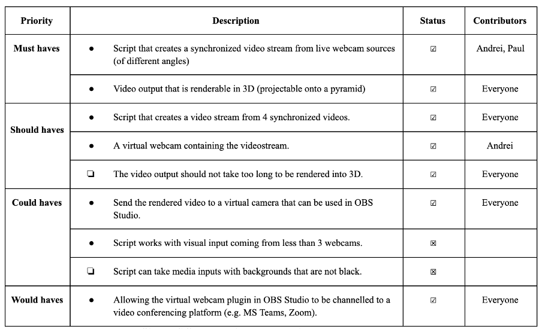
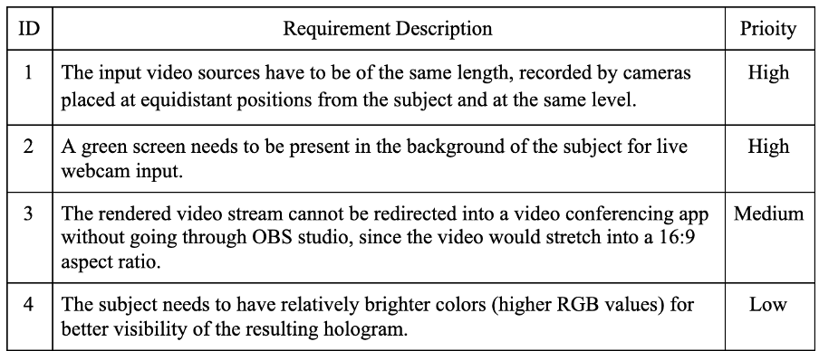

Evaluation
MoSCoW Achievements List
Known Bugs
As our project does not have a large amount of code and has a clear functionality, we do not have a list of known bugs. However, there are some specific requirements that need to be fulfilled in order for our system to function to the fullest extent. If these requirements are not met, it can lead to errors during the composing process or incomplete holograms being projected.
Individual Contribution Table
Critical evaluation of the project
Functionality
We have implemented all the Must Haves and the majority of optional features demanded from our clients. We managed to keep our implementation clear and simple, primarily using the OpenCV library. The libraries used in the project were reported to our clients and their approval was received before development. Its features mainly include image processing, video capture and analysis, as defined in our requirements list.
We have implemented all the Must Haves and the majority of optional features demanded from our clients. We managed to keep our implementation clear and simple, primarily using the OpenCV library. The libraries used in the project were reported to our clients and their approval was received before development. Its features mainly include image processing, video capture and analysis, as defined in our requirements list.
To access the functionalities of our media editor and produce a synchronised video stream successfully, input videos need to follow specific requirements as defined in Table #3. We explain in detail every functionality, as well as the input and output options in the README file on our GitHub repository to ensure that the users understand the system and utilize it as intended.
Due to the logistical issues with the webcam, we could not analyse our live webcam sources as expected. However, we are confident that the 3D video composition would happen successfully as long as the requirements listed in Table #3 are followed.
Stability
We tested the stability of our project on different computers with different operating systems, both on Windows and Mac OS. The Python script designed for the project does not show any error or warning messages in either case. Therefore, stability is guaranteed. Moreover, our system was implemented using Python and uploaded on GitHub for distribution. Anyone can clone the repository on their device and utilize the functionalities without complex deployment processes.
Efficiency
Based on our testing, our 3D media editor runs smoothly and quickly. The pre-recorded input video streams may take some time to be downloaded onto the device, however the actual composition and synchronization process happens almost instantly
Compatibility
Since our project is built using Python, a user with Python and the libraries such as OpenCV and pyvirtualcam downloaded can run our script on their device without trouble. However, this pattern of design means that it could not be accessed on a phone independently. The videos have to be synchronised on the computer before they can be redirected through OBS onto other devices to be projected onto a pyramid.
Maintainability
The codebase of our project is simple and implemented in a well-structured format. The code is easy to maintain and extendable for further development. Additionally, the script has been documented thoroughly and a detailed user manual is provided in the form of a README file on the repository. Moreover, all the features in our system were implemented using open-source libraries and platforms, meaning that there is zero cost for usage as well as minimal legal concerns.
Project Management
We have all experienced a very difficult year, working remotely for the entire academic year without face-to-face communications. It was especially challenging to carry out a group project of this scale remotely. However, through the use of many online communication tools, we were able to collaborate well and managed to deliver a profound solution. Below is a summary of what we did well and what could be improved.
- We made plans ahead, which maximised our productivity and avoided any procrastination or uneven distribution of tasks. We would set up weekly milestones, but sometimes readjust them if needed in order to keep the workload manageable, as long as it stayed reasonable within the overall development timeline.
- We communicated effectively during the developing process as a group, even though we were all in different timezones. We held meetings at least once a week, making sure everyone was updated on the overall status of the project and any individual progress.
- We clearly communicated our decisions and any difficulties we were having with our clients to avoid any misunderstanding.
- When faced with challenges that could not be resolved by ourselves, we asked our TA and clients for help, avoiding the sunk cost effect. However, we failed to solve the logistical issues of the webcams not being delivered. We should have continuously contacted the people that could help without waiting for long periods of time for an email reply.
- We divided our tasks equitably, based on the individual strengths and weaknesses. When a member was having trouble completing an individually assigned task, the group collectively worked on it.
Future work
Below is a list of additional features that we would like to implement in the future to improve our system:
- Test the script with live video input from webcams. Since the logistical issues with the webcams affected our development continuously, we decided to test our script with Maya. If we received the necessary technology, we would extend the current features to work more rigorously with live webcam data.
- Improve the background segmentation implementation. If we had more time, instead of assuming the presence of a greenscreen, we would implement a real-time background subtraction mechanism that can isolate the subject in a frame. This would make our system more user-friendly as the users would not have to use greenscreens.
- A user interface could be implemented to improve the user experience and lower the complexity of our system from the users’ perspective.
- If we could go back on campus, our system can be tested on a more rigorous holographic device in the UCL Engineering building instead of the portable miniature pyramid that we used to experiment with. This would allow for the creation of more complex visuals as well as improve the durability of our system.